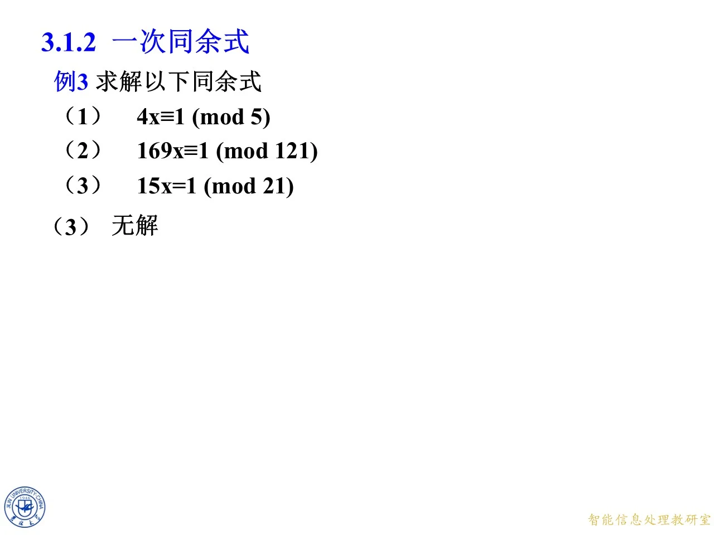
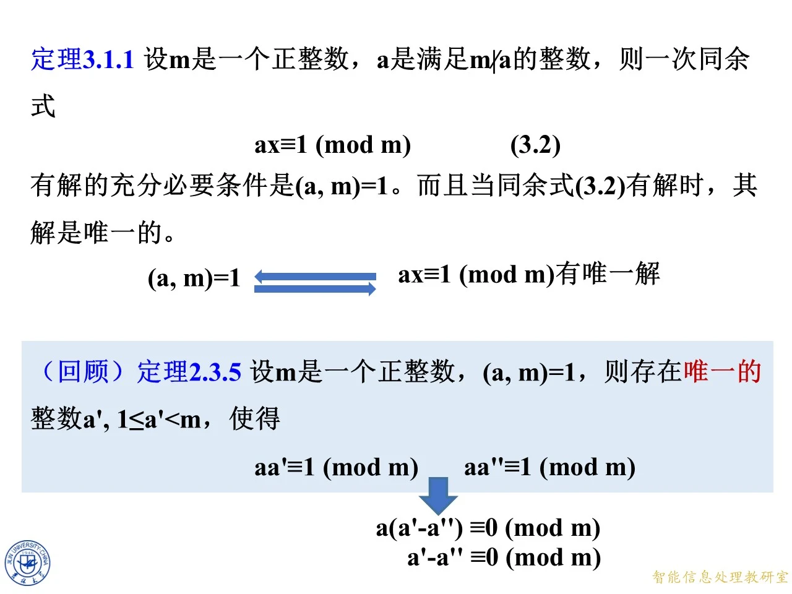
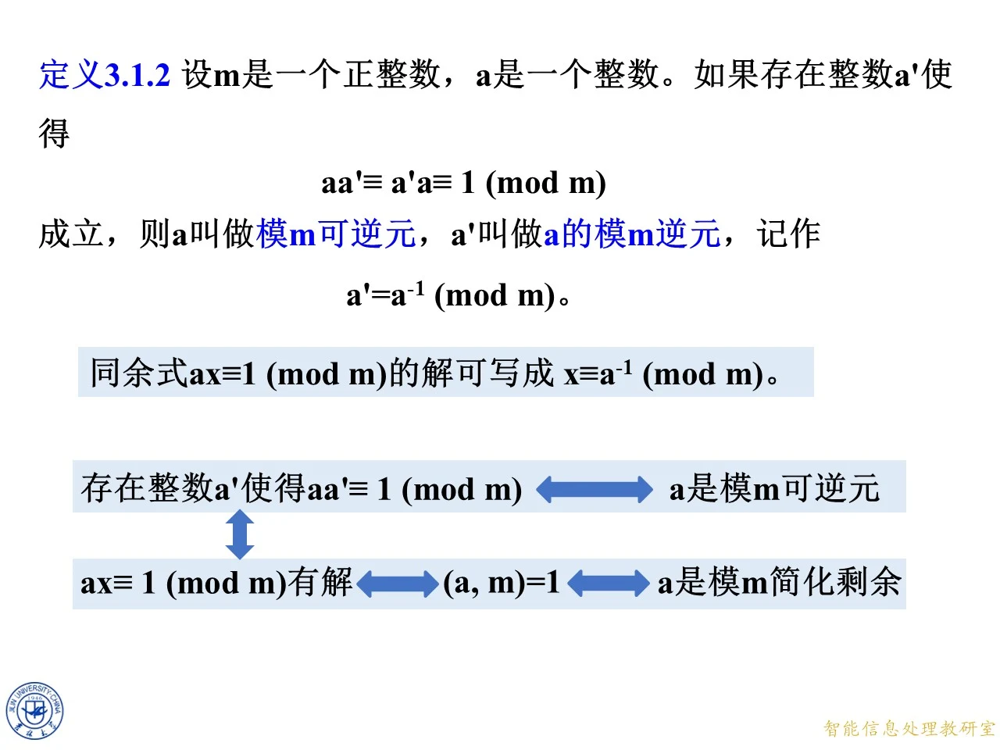

本节学习如何判断一次同余式是否有解，并用逆元求出它在原模下的全部解。它承接整除、贝祖等式、欧拉定理和简化剩余系，是同余式一章由基本概念进入方程求解的关键一步，也为后面学习中国剩余定理及高次同余式准备方法。复习时要分清“约分后模下的唯一解”和“原模下的多个解”，并掌握贝祖等式与欧拉定理两种求逆途径。
例 3：从具体方程认识逆元与无解
◆ p.327-329 ｜例 3 与插入的求逆例题
例 3 要求依次求解 4 x ≡ 1 ( m o d 5 ) 4x\equiv1\pmod 5 4 x ≡ 1 ( mod 5 ) 169 x ≡ 1 ( m o d 121 ) 169x\equiv1\pmod{121} 169 x ≡ 1 ( mod 121 ) 15 x ≡ 1 ( m o d 21 ) 15x\equiv1\pmod{21} 15 x ≡ 1 ( mod 21 ) 4 ⋅ 4 = 16 ≡ 1 ( m o d 5 ) 4\cdot4=16\equiv1\pmod 5 4 ⋅ 4 = 16 ≡ 1 ( mod 5 ) 4 4 4 16 x ≡ 4 ( m o d 5 ) 16x\equiv4\pmod 5 16 x ≡ 4 ( mod 5 ) x ≡ 4 ( m o d 5 ) x\equiv4\pmod 5 x ≡ 4 ( mod 5 ) 169 x ≡ 9 ( m o d 121 ) 169x\equiv9\pmod{121} 169 x ≡ 9 ( mod 121 ) 58 ⋅ 169 + ( − 81 ) ⋅ 121 = 1 58\cdot169+(-81)\cdot121=1 58 ⋅ 169 + ( − 81 ) ⋅ 121 = 1 58 ⋅ 169 ≡ 1 ( m o d 121 ) 58\cdot169\equiv1\pmod{121} 58 ⋅ 169 ≡ 1 ( mod 121 ) 58 ⋅ 169 x ≡ 58 ⋅ 9 ( m o d 121 ) , 58\cdot169x\equiv58\cdot9\pmod{121}, 58 ⋅ 169 x ≡ 58 ⋅ 9 ( mod 121 ) , [ 58 ⋅ 169 + ( − 81 ) ⋅ 121 ] x ≡ 58 ⋅ 9 ( m o d 121 ) , [58\cdot169+(-81)\cdot121]x\equiv58\cdot9\pmod{121}, [ 58 ⋅ 169 + ( − 81 ) ⋅ 121 ] x ≡ 58 ⋅ 9 ( mod 121 ) , x ≡ 522 ≡ 38 ( m o d 121 ) . x\equiv522\equiv38\pmod{121}. x ≡ 522 ≡ 38 ( mod 121 ) . − 81 ⋅ 121 x -81\cdot121x − 81 ⋅ 121 x 121 121 121 522 = 4 ⋅ 121 + 38 522=4\cdot121+38 522 = 4 ⋅ 121 + 38 38 38 38
本页思考题是 4 x ≡ 9 ( m o d 6 ) 4x\equiv9\pmod 6 4 x ≡ 9 ( mod 6 ) 拓展 （课件外补充）：若它有解，则存在整数 k k k 4 x − 9 = 6 k 4x-9=6k 4 x − 9 = 6 k 4 x − 6 k = 9 4x-6k=9 4 x − 6 k = 9 gcd ( 4 , 6 ) = 2 \gcd(4,6)=2 g cd( 4 , 6 ) = 2 9 9 9
◆ p.330-335 ｜例 3 第（2）题的两种解法
题目是 169 x ≡ 1 ( m o d 121 ) 169x\equiv1\pmod{121} 169 x ≡ 1 ( mod 121 ) 58 ⋅ 169 + ( − 81 ) ⋅ 121 = 1 58\cdot169+(-81)\cdot121=1 58 ⋅ 169 + ( − 81 ) ⋅ 121 = 1 121 121 121 121 121 121 58 ⋅ 169 ≡ 1 ( m o d 121 ) 58\cdot169\equiv1\pmod{121} 58 ⋅ 169 ≡ 1 ( mod 121 ) 58 58 58 169 169 169 121 121 121 x ≡ 58 ( m o d 121 ) x\equiv58\pmod{121} x ≡ 58 ( mod 121 ) 169 ⋅ 58 = 9802 = 81 ⋅ 121 + 1 169\cdot58=9802=81\cdot121+1 169 ⋅ 58 = 9802 = 81 ⋅ 121 + 1
解法二用欧拉定理。因为 121 = 11 2 121=11^2 121 = 1 1 2 φ ( 121 ) = 121 − 11 = 110 \varphi(121)=121-11=110 φ ( 121 ) = 121 − 11 = 110 gcd ( 169 , 121 ) = 1 \gcd(169,121)=1 g cd( 169 , 121 ) = 1 169 110 ≡ 1 ( m o d 121 ) 169^{110}\equiv1\pmod{121} 16 9 110 ≡ 1 ( mod 121 ) 169 109 169^{109} 16 9 109 x ≡ 169 109 ( m o d 121 ) x\equiv169^{109}\pmod{121} x ≡ 16 9 109 ( mod 121 ) 169 ≡ 48 ( m o d 121 ) 169\equiv48\pmod{121} 169 ≡ 48 ( mod 121 ) 48 = 2 4 ⋅ 3 48=2^4\cdot3 48 = 2 4 ⋅ 3 48 109 = 2 109 ⋅ 4 3 109 48^{109}=2^{109\cdot4}3^{109} 4 8 109 = 2 109 ⋅ 4 3 109 2 110 ≡ 1 ( m o d 121 ) 2^{110}\equiv1\pmod{121} 2 110 ≡ 1 ( mod 121 ) 2 436 2^{436} 2 436 2 106 2^{106} 2 106 2 106 ≡ 128 15 ⋅ 2 ≡ 7 15 ⋅ 2 ≡ 53 ( m o d 121 ) , 2^{106}\equiv128^{15}\cdot2\equiv7^{15}\cdot2\equiv53\pmod{121}, 2 106 ≡ 12 8 15 ⋅ 2 ≡ 7 15 ⋅ 2 ≡ 53 ( mod 121 ) , 3 109 ≡ 243 21 ⋅ 3 4 ≡ 3 4 ≡ 81 ( m o d 121 ) , 3^{109}\equiv243^{21}\cdot3^4\equiv3^4\equiv81\pmod{121}, 3 109 ≡ 24 3 21 ⋅ 3 4 ≡ 3 4 ≡ 81 ( mod 121 ) , x ≡ 53 ⋅ 81 ≡ 58 ( m o d 121 ) x\equiv53\cdot81\equiv58\pmod{121} x ≡ 53 ⋅ 81 ≡ 58 ( mod 121 )
拓展 （课件外补充）：课件此处有省略，计算时不能把中间幂误当成 1 1 1 2 110 ≡ 1 2^{110}\equiv1 2 110 ≡ 1 2 330 ≡ 1 2^{330}\equiv1 2 330 ≡ 1 128 15 ≡ 7 15 ≡ 87 128^{15}\equiv7^{15}\equiv87 12 8 15 ≡ 7 15 ≡ 87 3 5 ≡ 3 105 ≡ 243 21 ≡ 1 ( m o d 121 ) 3^5\equiv3^{105}\equiv243^{21}\equiv1\pmod{121} 3 5 ≡ 3 105 ≡ 24 3 21 ≡ 1 ( mod 121 ) 2 106 ≡ 53 2^{106}\equiv53 2 106 ≡ 53 3 109 ≡ 81 3^{109}\equiv81 3 109 ≡ 81 48 109 ≡ 58 ( m o d 121 ) 48^{109}\equiv58\pmod{121} 4 8 109 ≡ 58 ( mod 121 ) 53 ⋅ 81 ≡ 58 ( m o d 121 ) 53\cdot81\equiv58\pmod{121} 53 ⋅ 81 ≡ 58 ( mod 121 )
◆ p.336 ｜例 3 第（3）题无解
本页只给出 15 x ≡ 1 ( m o d 21 ) 15x\equiv1\pmod{21} 15 x ≡ 1 ( mod 21 ) 拓展 （课件外补充）：把同余式写成整除关系，若存在解，则有整数 k k k 15 x − 1 = 21 k 15x-1=21k 15 x − 1 = 21 k 15 x − 21 k = 1 15x-21k=1 15 x − 21 k = 1 gcd ( 15 , 21 ) = 3 \gcd(15,21)=3 g cd( 15 , 21 ) = 3 3 3 3 1 1 1 3 3 3 x x x

课件原图 · 9月23日授课 · 第 336 页 查看前后已收录原页 → 定理 3.1.1：右侧为 1 时的判定与唯一性
◆ p.337 ｜提出两个核心问题
本页把例 3 的特殊形式推广为 a x ≡ 1 ( m o d m ) ax\equiv1\pmod m a x ≡ 1 ( mod m ) m m m m m m
◆ p.338-340 ｜同余式转化为不定方程
按同余定义，a x ≡ 1 ( m o d m ) ax\equiv1\pmod m a x ≡ 1 ( mod m ) m ∣ a x − 1 m\mid ax-1 m ∣ a x − 1 y y y a x − 1 = m y ax-1=my a x − 1 = m y a x − m y = 1 ax-my=1 a x − m y = 1 x , y x,y x , y a x − m y = 1 ax-my=1 a x − m y = 1 a x − 1 = m y ax-1=my a x − 1 = m y a x ≡ 1 ( m o d m ) ax\equiv1\pmod m a x ≡ 1 ( mod m )
◆ p.341-346 ｜定理 3.1.1 及唯一性回顾
定理 3.1.1：设 m m m a a a m ∤ a m\nmid a m ∤ a a x ≡ 1 ( m o d m ) (3.2) ax\equiv1\pmod m \tag{3.2} a x ≡ 1 ( mod m ) ( 3.2 ) gcd ( a , m ) = 1 \gcd(a,m)=1 g cd( a , m ) = 1 a x − m y = 1 ax-my=1 a x − m y = 1 d = gcd ( a , m ) d=\gcd(a,m) d = g cd( a , m ) d ∣ a d\mid a d ∣ a d ∣ m d\mid m d ∣ m d ∣ a x − m y = 1 d\mid ax-my=1 d ∣ a x − m y = 1 d = 1 d=1 d = 1 s , t s,t s , t s a + t m = 1 sa+tm=1 s a + t m = 1 a s − m ( − t ) = 1 a s-m(-t)=1 a s − m ( − t ) = 1 x = s x=s x = s
本页还回顾定理 2.3.5：当 gcd ( a , m ) = 1 \gcd(a,m)=1 g cd( a , m ) = 1 a ′ a' a ′ 1 ≤ a ′ ≤ m − 1 1\le a'\le m-1 1 ≤ a ′ ≤ m − 1 a a ′ ≡ 1 ( m o d m ) aa'\equiv1\pmod m a a ′ ≡ 1 ( mod m ) a ′ ′ a'' a ′′ a ( a ′ − a ′ ′ ) ≡ 0 ( m o d m ) a(a'-a'')\equiv0\pmod m a ( a ′ − a ′′ ) ≡ 0 ( mod m ) a a a m m m a a a a ′ ≡ a ′ ′ ( m o d m ) a'\equiv a''\pmod m a ′ ≡ a ′′ ( mod m ) 1 1 1 m − 1 m-1 m − 1 a ′ = a ′ ′ a'=a'' a ′ = a ′′
◆ p.347 ｜补看充分性方向
此帧保留定理 3.1.1 和定理 2.3.5 的内容，但上下双向箭头暂时不显示，用来把“互素”和“有解”分开审视。应分别记住：有解推出互素，依据是公因数整除线性组合；互素推出有解，依据是贝祖表示。唯一性证明中的“消去 a a a
◆ p.348 ｜从有解反推互素
此帧只留下从“a x ≡ 1 ( m o d m ) ax\equiv1\pmod m a x ≡ 1 ( mod m ) gcd ( a , m ) = 1 \gcd(a,m)=1 g cd( a , m ) = 1 a x − m y = 1 ax-my=1 a x − m y = 1 d = gcd ( a , m ) d=\gcd(a,m) d = g cd( a , m ) a a a m m m d ∣ 1 d\mid1 d ∣ 1 d = 1 d=1 d = 1 a ′ a' a ′ a ′ ′ a'' a ′′ m m m
◆ p.349-351 ｜唯一解的完整结论
定理 3.1.1 的完整表述补上：当同余式（3.2）有解时，其解是唯一的，即 gcd ( a , m ) = 1 \gcd(a,m)=1 g cd( a , m ) = 1 a x ≡ 1 ( m o d m ) ax\equiv1\pmod m a x ≡ 1 ( mod m ) m m m x 0 x_0 x 0 x = x 0 + k m x=x_0+km x = x 0 + km k ∈ Z k\in\mathbb Z k ∈ Z m m m m m m

课件原图 · 9月23日授课 · 第 351 页 查看前后已收录原页 → 定义 3.1.2：模逆元及其求法
◆ p.352-357 ｜可逆元定义与贝祖求逆提示
定义 3.1.2：设 m m m a a a a ′ a' a ′ a a ′ ≡ a ′ a ≡ 1 ( m o d m ) , aa'\equiv a'a\equiv1\pmod m, a a ′ ≡ a ′ a ≡ 1 ( mod m ) , a a a m m m a ′ a' a ′ a a a m m m a ′ ≡ a − 1 ( m o d m ) a'\equiv a^{-1}\pmod m a ′ ≡ a − 1 ( mod m ) a x ≡ 1 ( m o d m ) ax\equiv1\pmod m a x ≡ 1 ( mod m ) x ≡ a − 1 ( m o d m ) x\equiv a^{-1}\pmod m x ≡ a − 1 ( mod m ) 1 1 1
本页练习是求 5 5 5 7 7 7 19 19 19 41 41 41 s ⋅ m + t ⋅ a = 1 s\cdot m+t\cdot a=1 s ⋅ m + t ⋅ a = 1 m m m s ⋅ m s\cdot m s ⋅ m t ⋅ a ≡ 1 ( m o d m ) t\cdot a\equiv1\pmod m t ⋅ a ≡ 1 ( mod m ) t t t
◆ p.358 ｜贝祖等式中系数的含义
此帧把提示中的问号补成 t ⋅ a ≡ 1 ( m o d m ) t\cdot a\equiv1\pmod m t ⋅ a ≡ 1 ( mod m ) a a a s ⋅ m + t ⋅ a = 1 s\cdot m+t\cdot a=1 s ⋅ m + t ⋅ a = 1 t t t s s s t t t m m m m m m
◆ p.359 ｜把系数命名为逆元
此帧用标注把 t t t a − 1 a^{-1} a − 1 t a = 1 − s m ta=1-sm t a = 1 − s m t a ≡ 1 ( m o d m ) ta\equiv1\pmod m t a ≡ 1 ( mod m ) t ≡ a − 1 ( m o d m ) t\equiv a^{-1}\pmod m t ≡ a − 1 ( mod m ) a a a m m m
◆ p.360 ｜求逆提示的小结
此帧继续强调 t t t a − 1 a^{-1} a − 1 gcd ( a , m ) = 1 \gcd(a,m)=1 g cd( a , m ) = 1 1 1 1 t ≡ a − 1 ( m o d m ) t\equiv a^{-1}\pmod m t ≡ a − 1 ( mod m )
◆ p.361-362 ｜欧拉定理求逆提示
第二种方法使用欧拉定理：当 gcd ( a , m ) = 1 \gcd(a,m)=1 g cd( a , m ) = 1 a φ ( m ) ≡ 1 ( m o d m ) a^{\varphi(m)}\equiv1\pmod m a φ ( m ) ≡ 1 ( mod m ) a φ ( m ) − 1 ⋅ a a^{\varphi(m)-1}\cdot a a φ ( m ) − 1 ⋅ a a φ ( m ) − 1 ⋅ a ≡ 1 ( m o d m ) . a^{\varphi(m)-1}\cdot a\equiv1\pmod m. a φ ( m ) − 1 ⋅ a ≡ 1 ( mod m ) . a − 1 ≡ a φ ( m ) − 1 ( m o d m ) a^{-1}\equiv a^{\varphi(m)-1}\pmod m a − 1 ≡ a φ ( m ) − 1 ( mod m )
◆ p.363-364 ｜识别欧拉法中的逆元因子
此帧把 a φ ( m ) − 1 a^{\varphi(m)-1} a φ ( m ) − 1 a − 1 a^{-1} a − 1 a a a 1 1 1 φ ( m ) \varphi(m) φ ( m ) φ ( m ) − 1 \varphi(m)-1 φ ( m ) − 1 0 0 0 m − 1 m-1 m − 1
◆ p.365 ｜逆元练习完整解答
拓展 （课件外补充）：课件只给出两个答案，现补齐两种方法。
（1）求 5 5 5 7 7 7 3 ⋅ 5 − 2 ⋅ 7 = 1 3\cdot5-2\cdot7=1 3 ⋅ 5 − 2 ⋅ 7 = 1 5 − 1 ≡ 3 ( m o d 7 ) 5^{-1}\equiv3\pmod 7 5 − 1 ≡ 3 ( mod 7 ) φ ( 7 ) = 6 \varphi(7)=6 φ ( 7 ) = 6 5 − 1 ≡ 5 5 ≡ 3 ( m o d 7 ) 5^{-1}\equiv5^5\equiv3\pmod 7 5 − 1 ≡ 5 5 ≡ 3 ( mod 7 ) 5 ⋅ 3 = 15 ≡ 1 ( m o d 7 ) 5\cdot3=15\equiv1\pmod 7 5 ⋅ 3 = 15 ≡ 1 ( mod 7 )
（2）求 19 19 19 41 41 41 13 ⋅ 19 − 6 ⋅ 41 = 1 13\cdot19-6\cdot41=1 13 ⋅ 19 − 6 ⋅ 41 = 1 19 − 1 ≡ 13 ( m o d 41 ) 19^{-1}\equiv13\pmod{41} 1 9 − 1 ≡ 13 ( mod 41 ) φ ( 41 ) = 40 \varphi(41)=40 φ ( 41 ) = 40 19 − 1 ≡ 19 39 ≡ 13 ( m o d 41 ) 19^{-1}\equiv19^{39}\equiv13\pmod{41} 1 9 − 1 ≡ 1 9 39 ≡ 13 ( mod 41 ) 19 ⋅ 13 = 247 = 6 ⋅ 41 + 1 19\cdot13=247=6\cdot41+1 19 ⋅ 13 = 247 = 6 ⋅ 41 + 1 3 3 3 13 13 13
◆ p.366-371 ｜逆元的三条基本性质
（1）当 gcd ( a , m ) = 1 \gcd(a,m)=1 g cd( a , m ) = 1 a − 1 a^{-1} a − 1 m m m a ′ ≡ a − 1 a'\equiv a^{-1} a ′ ≡ a − 1 a a a a ′ a' a ′ ( a − 1 ) − 1 ≡ a ( m o d m ) (a^{-1})^{-1}\equiv a\pmod m ( a − 1 ) − 1 ≡ a ( mod m ) k k k ( a − 1 ) k ≡ ( a k ) − 1 ( m o d m ) . (a^{-1})^k\equiv(a^k)^{-1}\pmod m. ( a − 1 ) k ≡ ( a k ) − 1 ( mod m ) . a k ( a − 1 ) k ≡ ( a a − 1 ) k ≡ 1 k ≡ 1 ( m o d m ) . a^k(a^{-1})^k\equiv(aa^{-1})^k\equiv1^k\equiv1\pmod m. a k ( a − 1 ) k ≡ ( a a − 1 ) k ≡ 1 k ≡ 1 ( mod m ) . k k k a a a a − 1 a^{-1} a − 1 a a − 1 ≡ 1 aa^{-1}\equiv1 a a − 1 ≡ 1 ( a − 1 ) k (a^{-1})^k ( a − 1 ) k a k a^k a k 1 1 1 a k a^k a k
◆ p.372-376 ｜可逆、互素与简化剩余的等价链
本页把已有概念连成一条等价链：a a a m m m a ′ a' a ′ a a ′ ≡ 1 ( m o d m ) aa'\equiv1\pmod m a a ′ ≡ 1 ( mod m ) a x ≡ 1 ( m o d m ) ax\equiv1\pmod m a x ≡ 1 ( mod m ) gcd ( a , m ) = 1 \gcd(a,m)=1 g cd( a , m ) = 1 a a a m m m

课件原图 · 9月23日授课 · 第 376 页 查看前后已收录原页 → 定理 3.1.2：简化剩余与可逆元的等价描述
◆ p.377-378 ｜定理 3.1.2 及双向证明
定理 3.1.2：设 m m m a a a m m m a a a m m m
必要性：若 a a a m m m gcd ( a , m ) = 1 \gcd(a,m)=1 g cd( a , m ) = 1 a ′ a' a ′ a a ′ ≡ 1 ( m o d m ) aa'\equiv1\pmod m a a ′ ≡ 1 ( mod m ) a a a m m m
充分性：若 a a a m m m a ′ a' a ′ a a ′ ≡ 1 ( m o d m ) aa'\equiv1\pmod m a a ′ ≡ 1 ( mod m ) a x ≡ 1 ( m o d m ) ax\equiv1\pmod m a x ≡ 1 ( mod m ) x ≡ a ′ ( m o d m ) x\equiv a'\pmod m x ≡ a ′ ( mod m ) gcd ( a , m ) = 1 \gcd(a,m)=1 g cd( a , m ) = 1 a a a m m m
◆ p.379-381 ｜例 4：筛选模 9 可逆元
此处的例 4 要求写出模 9 9 9 { 0 , 1 , 2 , 3 , 4 , 5 , 6 , 7 , 8 } \{0,1,2,3,4,5,6,7,8\} { 0 , 1 , 2 , 3 , 4 , 5 , 6 , 7 , 8 } 9 9 9 9 = 3 2 9=3^2 9 = 3 2 9 9 9 3 3 3 0 , 3 , 6 0,3,6 0 , 3 , 6 { 1 , 2 , 4 , 5 , 7 , 8 } \{1,2,4,5,7,8\} { 1 , 2 , 4 , 5 , 7 , 8 } φ ( 9 ) = 6 \varphi(9)=6 φ ( 9 ) = 6
◆ p.382-383 ｜例 4：继续求各自逆元
本页在完全剩余系中划去 0 , 3 , 6 0,3,6 0 , 3 , 6 9 9 9 a a a b b b a b ≡ 1 ( m o d 9 ) ab\equiv1\pmod 9 ab ≡ 1 ( mod 9 ) 1 1 1 10 10 10 拓展 （课件外补充）：逐一计算可得 1 ⋅ 1 ≡ 1 1\cdot1\equiv1 1 ⋅ 1 ≡ 1 2 ⋅ 5 = 10 ≡ 1 2\cdot5=10\equiv1 2 ⋅ 5 = 10 ≡ 1 4 ⋅ 7 = 28 ≡ 1 4\cdot7=28\equiv1 4 ⋅ 7 = 28 ≡ 1 8 ⋅ 8 = 64 ≡ 1 ( m o d 9 ) 8\cdot8=64\equiv1\pmod 9 8 ⋅ 8 = 64 ≡ 1 ( mod 9 ) 1 ↔ 1 1\leftrightarrow1 1 ↔ 1 2 ↔ 5 2\leftrightarrow5 2 ↔ 5 4 ↔ 7 4\leftrightarrow7 4 ↔ 7 8 ↔ 8 8\leftrightarrow8 8 ↔ 8
◆ p.384 ｜模 9 逆元配对的图示
图中虚线把 1 1 1 8 8 8 2 2 2 5 5 5 4 4 4 7 7 7 1 − 1 ≡ 1 1^{-1}\equiv1 1 − 1 ≡ 1 2 − 1 ≡ 5 2^{-1}\equiv5 2 − 1 ≡ 5 5 − 1 ≡ 2 5^{-1}\equiv2 5 − 1 ≡ 2 4 − 1 ≡ 7 4^{-1}\equiv7 4 − 1 ≡ 7 7 − 1 ≡ 4 7^{-1}\equiv4 7 − 1 ≡ 4 8 − 1 ≡ 8 ( m o d 9 ) 8^{-1}\equiv8\pmod 9 8 − 1 ≡ 8 ( mod 9 ) ( a − 1 ) − 1 ≡ a (a^{-1})^{-1}\equiv a ( a − 1 ) − 1 ≡ a 1 1 1 8 8 8
例 4：一般右端与剩余类的展开
◆ p.385-391 ｜例 4 前两问及模的转换问题
本组幻灯片再次使用“例 4”编号，题目改为求解 169 x ≡ 9 ( m o d 121 ) 169x\equiv9\pmod{121} 169 x ≡ 9 ( mod 121 ) 338 x ≡ 18 ( m o d 242 ) 338x\equiv18\pmod{242} 338 x ≡ 18 ( mod 242 ) 15 x ≡ 2 ( m o d 21 ) 15x\equiv2\pmod{21} 15 x ≡ 2 ( mod 21 )
第（1）问利用例 3 已得的 169 − 1 ≡ 58 ( m o d 121 ) 169^{-1}\equiv58\pmod{121} 16 9 − 1 ≡ 58 ( mod 121 ) 58 58 58 x ≡ 9 ⋅ 58 ≡ 522 ≡ 38 ( m o d 121 ) . x\equiv9\cdot58\equiv522\equiv38\pmod{121}. x ≡ 9 ⋅ 58 ≡ 522 ≡ 38 ( mod 121 ) . 338 = 2 ⋅ 169 338=2\cdot169 338 = 2 ⋅ 169 18 = 2 ⋅ 9 18=2\cdot9 18 = 2 ⋅ 9 242 = 2 ⋅ 121 242=2\cdot121 242 = 2 ⋅ 121 2 2 2 169 x ≡ 9 ( m o d 121 ) 169x\equiv9\pmod{121} 169 x ≡ 9 ( mod 121 ) x ≡ 38 ( m o d 121 ) x\equiv38\pmod{121} x ≡ 38 ( mod 121 ) 242 242 242 242 242 242
◆ p.392 ｜插入例：模 3 与模 6 的关系
插入例为 10 x ≡ 10 ( m o d 6 ) 10x\equiv10\pmod 6 10 x ≡ 10 ( mod 6 ) 5 5 5 gcd ( 5 , 6 ) = 1 \gcd(5,6)=1 g cd( 5 , 6 ) = 1 2 x ≡ 2 ( m o d 6 ) 2x\equiv2\pmod 6 2 x ≡ 2 ( mod 6 ) 2 x , 2 , 6 2x,2,6 2 x , 2 , 6 2 2 2 2 2 2 x ≡ 1 ( m o d 3 ) x\equiv1\pmod 3 x ≡ 1 ( mod 3 )
拓展 （课件外补充）：若 x ≡ 1 ( m o d 3 ) x\equiv1\pmod 3 x ≡ 1 ( mod 3 ) x = 1 + 3 k x=1+3k x = 1 + 3 k k = 2 t k=2t k = 2 t k = 2 t + 1 k=2t+1 k = 2 t + 1 x = 1 + 6 t x=1+6t x = 1 + 6 t x = 4 + 6 t x=4+6t x = 4 + 6 t 6 6 6 x ≡ 1 , 4 ( m o d 6 ) x\equiv1,4\pmod 6 x ≡ 1 , 4 ( mod 6 ) 10 ⋅ 1 − 10 = 0 10\cdot1-10=0 10 ⋅ 1 − 10 = 0 10 ⋅ 4 − 10 = 30 10\cdot4-10=30 10 ⋅ 4 − 10 = 30 6 6 6 2 x ≡ 2 ( m o d 6 ) 2x\equiv2\pmod 6 2 x ≡ 2 ( mod 6 )
◆ p.393 ｜从余数 38 回到模 242
本页问：若 x x x 121 121 121 38 38 38 242 242 242 242 = 2 ⋅ 121 242=2\cdot121 242 = 2 ⋅ 121 x = 38 + 121 k x=38+121k x = 38 + 121 k 242 242 242 k k k x ≡ 38 ( m o d 121 ) x\equiv38\pmod{121} x ≡ 38 ( mod 121 ) 242 242 242
◆ p.394-397 ｜例 4 的全部解
拓展 （课件外补充）：补全第（2）问的分类过程。由 x = 38 + 121 k x=38+121k x = 38 + 121 k k = 2 t k=2t k = 2 t x = 38 + 242 t x=38+242t x = 38 + 242 t k = 2 t + 1 k=2t+1 k = 2 t + 1 x = 159 + 242 t x=159+242t x = 159 + 242 t x ≡ 38 + 121 k ≡ 38 , 159 ( m o d 242 ) . x\equiv38+121k\equiv38,159\pmod{242}. x ≡ 38 + 121 k ≡ 38 , 159 ( mod 242 ) . 338 ⋅ 38 − 18 = 12826 = 53 ⋅ 242 338\cdot38-18=12826=53\cdot242 338 ⋅ 38 − 18 = 12826 = 53 ⋅ 242 338 ⋅ 159 − 18 = 53724 = 222 ⋅ 242 338\cdot159-18=53724=222\cdot242 338 ⋅ 159 − 18 = 53724 = 222 ⋅ 242
第（3）问 15 x ≡ 2 ( m o d 21 ) 15x\equiv2\pmod{21} 15 x ≡ 2 ( mod 21 ) gcd ( 15 , 21 ) = 3 \gcd(15,21)=3 g cd( 15 , 21 ) = 3 15 x − 2 = 21 y 15x-2=21y 15 x − 2 = 21 y 15 x − 21 y = 2 15x-21y=2 15 x − 21 y = 2 3 3 3 3 3 3 121 121 121 242 242 242
定理 3.1.3：有解判定与全部解公式
◆ p.398-401 ｜一般一次同余式化为不定方程
对一般形式 a x ≡ b ( m o d m ) ax\equiv b\pmod m a x ≡ b ( mod m ) x x x x , y x,y x , y a x = b + m y ax=b+my a x = b + m y a x − m y = b ax-my=b a x − m y = b y y y
◆ p.402 ｜从方程走向整除条件
此帧把 a x − m y = b ax-my=b a x − m y = b gcd ( a , m ) ∣ b \gcd(a,m)\mid b g cd( a , m ) ∣ b gcd ( a , m ) \gcd(a,m) g cd( a , m ) b b b
◆ p.403-405 ｜必要性的整除链
令 d = gcd ( a , m ) d=\gcd(a,m) d = g cd( a , m ) d ∣ a d\mid a d ∣ a d ∣ m d\mid m d ∣ m x , y x,y x , y d ∣ a x d\mid ax d ∣ a x d ∣ m y d\mid my d ∣ m y d ∣ a x − m y d\mid ax-my d ∣ a x − m y a x − m y = b ax-my=b a x − m y = b d ∣ b d\mid b d ∣ b
◆ p.406 ｜完成必要条件
此帧把 d ∣ a x − m y d\mid ax-my d ∣ a x − m y d ∣ b d\mid b d ∣ b a x − m y = b ax-my=b a x − m y = b a x ≡ b ( m o d m ) ax\equiv b\pmod m a x ≡ b ( mod m ) gcd ( a , m ) ∣ b \gcd(a,m)\mid b g cd( a , m ) ∣ b
◆ p.407-408 ｜充分性的构造
若 d = gcd ( a , m ) d=\gcd(a,m) d = g cd( a , m ) d ∣ b d\mid b d ∣ b s , t s,t s , t a s − m t = d as-mt=d a s − m t = d b = d q b=dq b = d q q q q a ( s q ) − m ( t q ) = d q = b a(sq)-m(tq)=dq=b a ( s q ) − m ( tq ) = d q = b x = s q x=sq x = s q y = t q y=tq y = tq a x − m y = b ax-my=b a x − m y = b d ∣ b d\mid b d ∣ b
◆ p.409 ｜判定条件的双向闭环
本页把 a x − m y = b ax-my=b a x − m y = b gcd ( a , m ) ∣ b \gcd(a,m)\mid b g cd( a , m ) ∣ b a x ≡ b ( m o d m ) ⟺ a x = b + m y ⟺ a x − m y = b ax\equiv b\pmod m\Longleftrightarrow ax=b+my\Longleftrightarrow ax-my=b a x ≡ b ( mod m ) ⟺ a x = b + m y ⟺ a x − m y = b
◆ p.410-411 ｜定理 3.1.3 的存在性部分
定理 3.1.3：设 m m m a a a m ∤ a m\nmid a m ∤ a a x ≡ b ( m o d m ) ax\equiv b\pmod m a x ≡ b ( mod m ) gcd ( a , m ) ∣ b \gcd(a,m)\mid b g cd( a , m ) ∣ b b = 1 b=1 b = 1 gcd ( a , m ) = 1 \gcd(a,m)=1 g cd( a , m ) = 1 d = gcd ( a , m ) d=\gcd(a,m) d = g cd( a , m ) d ∣ b d\mid b d ∣ b
◆ p.412-414 ｜用逆元重看前面的例 4
本页用 169 − 1 169^{-1} 16 9 − 1 169 x ≡ 1 ( m o d 121 ) 169x\equiv1\pmod{121} 169 x ≡ 1 ( mod 121 ) x ≡ 169 − 1 ≡ 58 ( m o d 121 ) x\equiv169^{-1}\equiv58\pmod{121} x ≡ 16 9 − 1 ≡ 58 ( mod 121 ) 169 x ≡ 9 ( m o d 121 ) 169x\equiv9\pmod{121} 169 x ≡ 9 ( mod 121 ) x ≡ 9 ⋅ 169 − 1 ≡ 38 ( m o d 121 ) x\equiv9\cdot169^{-1}\equiv38\pmod{121} x ≡ 9 ⋅ 16 9 − 1 ≡ 38 ( mod 121 ) 338 x ≡ 18 ( m o d 242 ) 338x\equiv18\pmod{242} 338 x ≡ 18 ( mod 242 ) 121 121 121 242 242 242 38 38 38 159 159 159
◆ p.415 ｜先约去最大公因数
设 d = gcd ( a , m ) d=\gcd(a,m) d = g cd( a , m ) d ∣ b d\mid b d ∣ b a x ≡ b ( m o d m ) ax\equiv b\pmod m a x ≡ b ( mod m ) a ′ x ≡ b ′ ( m o d m ′ ) a'x\equiv b'\pmod{m'} a ′ x ≡ b ′ ( mod m ′ ) a ′ = a / d a'=a/d a ′ = a / d b ′ = b / d b'=b/d b ′ = b / d m ′ = m / d m'=m/d m ′ = m / d a x − b = m y ax-b=my a x − b = m y d d d gcd ( a ′ , m ′ ) = 1 \gcd(a',m')=1 g cd( a ′ , m ′ ) = 1
◆ p.416 ｜先求约分后系数的逆元
本页先考虑辅助方程 a ′ x ≡ 1 ( m o d m ′ ) a'x\equiv1\pmod{m'} a ′ x ≡ 1 ( mod m ′ ) gcd ( a ′ , m ′ ) = 1 \gcd(a',m')=1 g cd( a ′ , m ′ ) = 1 x ≡ ( a ′ ) − 1 ( m o d m ′ ) x\equiv(a')^{-1}\pmod{m'} x ≡ ( a ′ ) − 1 ( mod m ′ ) x ≡ ( a d ) − 1 ( m o d m d ) . x\equiv\left(\frac{a}{d}\right)^{-1}\pmod{\frac md}. x ≡ ( d a ) − 1 ( mod d m ) . m ′ m' m ′ m m m a a a d ≥ 2 d\ge2 d ≥ 2 m m m
◆ p.417 ｜由辅助解得到新模唯一解
把 a ′ x ≡ b ′ ( m o d m ′ ) a'x\equiv b'\pmod{m'} a ′ x ≡ b ′ ( mod m ′ ) ( a ′ ) − 1 (a')^{-1} ( a ′ ) − 1 x 0 ≡ b ′ ( a ′ ) − 1 ≡ b d ( a d ) − 1 ( m o d m d ) . x_0\equiv b'(a')^{-1}\equiv\frac bd\left(\frac ad\right)^{-1}\pmod{\frac md}. x 0 ≡ b ′ ( a ′ ) − 1 ≡ d b ( d a ) − 1 ( mod d m ) . a ′ a' a ′ m ′ m' m ′ m ′ m' m ′ a ′ , b ′ , m ′ , d a',b',m',d a ′ , b ′ , m ′ , d a / d , b / d , m / d a/d,b/d,m/d a / d , b / d , m / d
◆ p.418-419 ｜准备回到原模
此帧已给出新模唯一解 x ≡ b ′ ( a ′ ) − 1 ( m o d m ′ ) x\equiv b'(a')^{-1}\pmod{m'} x ≡ b ′ ( a ′ ) − 1 ( mod m ′ ) m m m ( m o d m ′ ) \pmod{m'} ( mod m ′ ) ( m o d m ) \pmod m ( mod m ) x = x 0 + k m ′ x=x_0+km' x = x 0 + k m ′ k k k d d d
◆ p.420-422 ｜定理 3.1.3 的全部解公式
取 x 0 x_0 x 0 m / d m/d m / d x ≡ x 0 + t ⋅ m d ( m o d m ) , t = 0 , 1 , … , d − 1 , x\equiv x_0+t\cdot\frac md\pmod m,\qquad t=0,1,\ldots,d-1, x ≡ x 0 + t ⋅ d m ( mod m ) , t = 0 , 1 , … , d − 1 , x 0 ≡ b d ( ( a d ) − 1 ( m o d m d ) ) ( m o d m d ) . x_0\equiv\frac bd\left(\left(\frac ad\right)^{-1}\pmod{\frac md}\right)\pmod{\frac md}. x 0 ≡ d b ( ( d a ) − 1 ( mod d m ) ) ( mod d m ) . x x x x ≡ x 0 ( m o d m / d ) x\equiv x_0\pmod{m/d} x ≡ x 0 ( mod m / d ) x 0 x_0 x 0 m / d m/d m / d
◆ p.423-425 ｜为什么恰有 d d d
设 m ′ = m / d m'=m/d m ′ = m / d t i , t j t_i,t_j t i , t j m m m ( t i − t j ) m ′ ≡ 0 ( m o d d m ′ ) (t_i-t_j)m'\equiv0\pmod{dm'} ( t i − t j ) m ′ ≡ 0 ( mod d m ′ ) m ′ m' m ′ t i ≡ t j ( m o d d ) t_i\equiv t_j\pmod d t i ≡ t j ( mod d ) t = 0 , 1 , … , d − 1 t=0,1,\ldots,d-1 t = 0 , 1 , … , d − 1 t t t d d d m m m d = gcd ( a , m ) d=\gcd(a,m) d = g cd( a , m ) t t t
例 5：约分、求逆并展开全部解
◆ p.426-431 ｜例 5 的逆元解法
例 5 求解 57 x ≡ 531 ( m o d 123 ) 57x\equiv531\pmod{123} 57 x ≡ 531 ( mod 123 ) 531 = 4 ⋅ 123 + 39 531=4\cdot123+39 531 = 4 ⋅ 123 + 39 57 x ≡ 39 ( m o d 123 ) 57x\equiv39\pmod{123} 57 x ≡ 39 ( mod 123 ) gcd ( 57 , 123 ) = 3 \gcd(57,123)=3 g cd( 57 , 123 ) = 3 3 ∣ 39 3\mid39 3 ∣ 39 3 3 3 19 x ≡ 13 ( m o d 41 ) 19x\equiv13\pmod{41} 19 x ≡ 13 ( mod 41 ) 19 − 1 ≡ 13 ( m o d 41 ) 19^{-1}\equiv13\pmod{41} 1 9 − 1 ≡ 13 ( mod 41 ) x ≡ 13 ⋅ 13 = 169 ≡ 5 ( m o d 41 ) . x\equiv13\cdot13=169\equiv5\pmod{41}. x ≡ 13 ⋅ 13 = 169 ≡ 5 ( mod 41 ) . t = 0 , 1 , 2 t=0,1,2 t = 0 , 1 , 2 x ≡ 5 , 5 + 41 = 46 , 5 + 2 ⋅ 41 = 87 ( m o d 123 ) . x\equiv5,\ 5+41=46,\ 5+2\cdot41=87\pmod{123}. x ≡ 5 , 5 + 41 = 46 , 5 + 2 ⋅ 41 = 87 ( mod 123 ) . gcd ( 57 , 123 ) = 3 \gcd(57,123)=3 g cd( 57 , 123 ) = 3 57 ⋅ 5 − 531 = − 246 = − 2 ⋅ 123 57\cdot5-531=-246=-2\cdot123 57 ⋅ 5 − 531 = − 246 = − 2 ⋅ 123 57 ⋅ 46 − 531 = 2091 = 17 ⋅ 123 57\cdot46-531=2091=17\cdot123 57 ⋅ 46 − 531 = 2091 = 17 ⋅ 123 57 ⋅ 87 − 531 = 4428 = 36 ⋅ 123 57\cdot87-531=4428=36\cdot123 57 ⋅ 87 − 531 = 4428 = 36 ⋅ 123
◆ p.432-433 ｜例 5 的贝祖等式直接解法
也可不解辅助方程，直接对 19 x ≡ 13 ( m o d 41 ) 19x\equiv13\pmod{41} 19 x ≡ 13 ( mod 41 ) ( − 6 ) ⋅ 41 + 13 ⋅ 19 = 1 (-6)\cdot41+13\cdot19=1 ( − 6 ) ⋅ 41 + 13 ⋅ 19 = 1 41 41 41 ( − 6 ) ⋅ 41 x (-6)\cdot41x ( − 6 ) ⋅ 41 x x ≡ [ ( − 6 ) ⋅ 41 + 13 ⋅ 19 ] x ≡ 13 ⋅ 19 x ≡ 13 ⋅ 13 ≡ 5 ( m o d 41 ) . x\equiv[(-6)\cdot41+13\cdot19]x\equiv13\cdot19x\equiv13\cdot13\equiv5\pmod{41}. x ≡ [( − 6 ) ⋅ 41 + 13 ⋅ 19 ] x ≡ 13 ⋅ 19 x ≡ 13 ⋅ 13 ≡ 5 ( mod 41 ) . 1 1 1 41 41 41 19 x ≡ 13 19x\equiv13 19 x ≡ 13 123 123 123 5 , 46 , 87 5,46,87 5 , 46 , 87
一般步骤与例 6、例 7、例 8
◆ p.434-438 ｜一般步骤与三道题
一般流程是：对 a x ≡ b ( m o d m ) ax\equiv b\pmod m a x ≡ b ( mod m ) d = gcd ( a , m ) d=\gcd(a,m) d = g cd( a , m ) d ∤ b d\nmid b d ∤ b d ∣ b d\mid b d ∣ b ( a / d ) x ≡ b / d ( m o d m / d ) (a/d)x\equiv b/d\pmod{m/d} ( a / d ) x ≡ b / d ( mod m / d ) m / d m/d m / d x 0 x_0 x 0 x ≡ x 0 + t ( m / d ) ( m o d m ) x\equiv x_0+t(m/d)\pmod m x ≡ x 0 + t ( m / d ) ( mod m ) t = 0 , … , d − 1 t=0,\ldots,d-1 t = 0 , … , d − 1 m / d m/d m / d m m m d d d
拓展 （课件外补充）：例 6 求解 1296 x ≡ 1125 ( m o d 1935 ) 1296x\equiv1125\pmod{1935} 1296 x ≡ 1125 ( mod 1935 ) d = gcd ( 1296 , 1935 ) = 9 d=\gcd(1296,1935)=9 d = g cd( 1296 , 1935 ) = 9 9 ∣ 1125 9\mid1125 9 ∣ 1125 9 9 9 144 x ≡ 125 ( m o d 215 ) 144x\equiv125\pmod{215} 144 x ≡ 125 ( mod 215 ) 71 ⋅ 215 + ( − 106 ) ⋅ 144 = 1 71\cdot215+(-106)\cdot144=1 71 ⋅ 215 + ( − 106 ) ⋅ 144 = 1 144 − 1 ≡ − 106 ≡ 109 ( m o d 215 ) 144^{-1}\equiv-106\equiv109\pmod{215} 14 4 − 1 ≡ − 106 ≡ 109 ( mod 215 ) x 0 ≡ − 106 ⋅ 125 = − 13250 ≡ 80 ( m o d 215 ) x_0\equiv-106\cdot125=-13250\equiv80\pmod{215} x 0 ≡ − 106 ⋅ 125 = − 13250 ≡ 80 ( mod 215 ) x ≡ 80 , 295 , 510 , 725 , 940 , 1155 , 1370 , 1585 , 1800 ( m o d 1935 ) . x\equiv80,295,510,725,940,1155,1370,1585,1800\pmod{1935}. x ≡ 80 , 295 , 510 , 725 , 940 , 1155 , 1370 , 1585 , 1800 ( mod 1935 ) . x = 80 + 215 t x=80+215t x = 80 + 215 t t = 0 , … , 8 t=0,\ldots,8 t = 0 , … , 8 1935 1935 1935
拓展 （课件外补充）：例 7 求解 37 x ≡ 3819 ( m o d 10 ) 37x\equiv3819\pmod{10} 37 x ≡ 3819 ( mod 10 ) 7 x ≡ 9 ( m o d 10 ) 7x\equiv9\pmod{10} 7 x ≡ 9 ( mod 10 ) 7 ⋅ 3 = 21 ≡ 1 ( m o d 10 ) 7\cdot3=21\equiv1\pmod{10} 7 ⋅ 3 = 21 ≡ 1 ( mod 10 ) 7 − 1 ≡ 3 ( m o d 10 ) 7^{-1}\equiv3\pmod{10} 7 − 1 ≡ 3 ( mod 10 ) x ≡ 3 ⋅ 9 = 27 ≡ 7 ( m o d 10 ) x\equiv3\cdot9=27\equiv7\pmod{10} x ≡ 3 ⋅ 9 = 27 ≡ 7 ( mod 10 ) d = 1 d=1 d = 1
拓展 （课件外补充）：例 8 已知 a 100 ≡ 2 ( m o d 73 ) a^{100}\equiv2\pmod{73} a 100 ≡ 2 ( mod 73 ) a 101 ≡ 69 ( m o d 73 ) a^{101}\equiv69\pmod{73} a 101 ≡ 69 ( mod 73 ) a 101 = a 100 a a^{101}=a^{100}a a 101 = a 100 a 2 a ≡ 69 ( m o d 73 ) 2a\equiv69\pmod{73} 2 a ≡ 69 ( mod 73 ) 2 ⋅ 37 = 74 ≡ 1 ( m o d 73 ) 2\cdot37=74\equiv1\pmod{73} 2 ⋅ 37 = 74 ≡ 1 ( mod 73 ) 2 − 1 ≡ 37 ( m o d 73 ) 2^{-1}\equiv37\pmod{73} 2 − 1 ≡ 37 ( mod 73 ) a ≡ 37 ⋅ 69 = 2553 ≡ 71 ( m o d 73 ) a\equiv37\cdot69=2553\equiv71\pmod{73} a ≡ 37 ⋅ 69 = 2553 ≡ 71 ( mod 73 ) a a a 73 73 73 71 71 71
结束页与后续内容
◆ p.439 ｜结束页
本页仅有“End”，没有新的数学内容，表示本次授课结束。学习到这里应能独立完成“判定有无解—约分—求逆—展开原模全部解—回代检验”的完整流程。
◆ p.440 ｜第三章封面
本页为“第三章 同余式”的封面，标注吉林大学、董旭初，没有新增定理或例题。它作为后续课件的起始页保留在本课页码序列中，不需要据此补入本页未出现的知识。
◆ p.441 ｜第三章目录
目录列出第三章四部分：3.1 基本概念及一次同余式，3.2 中国剩余定理，3.3 高次同余式的解数及解法，3.4 素数模的同余式。本课属于 3.1，解决一个未知数的一次同余式；后续 3.2 将转向多个同余式联立的问题。
◆ p.442 ｜过渡到 3.2
本页目录与上页相同，但“3.2 中国剩余定理”变为红色，标示接下来进入该主题。一次同余式中的求逆与剩余类表示，会继续作为中国剩余定理构造解和表示解集的基础。